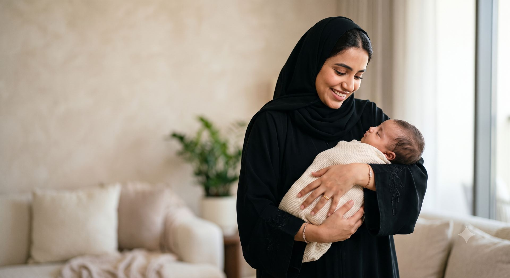
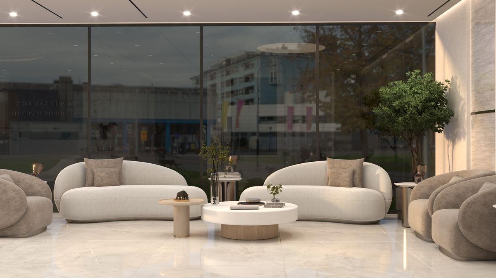

Our Approach
One procedure. One technique. One focus.
Some clinics do many things. We chose to do one thing, and to give it everything.
Why
Every decision in this clinic (the technique we chose, the people we hired, the way your time with us unfolds) exists in service of a single craft: newborn circumcision, done as gently as we know how. This page explains how, and why.
The Technique
The Pollock Technique
The Pollock Technique™ was developed by Dr Neil Pollock in Vancouver and refined over decades, carrying the experience of more than 100,000 families. It is practised today in Gentle Procedures clinics in Canada, the United States, the United Kingdom, Ireland and Australia.
Your surgeon trained with Dr Pollock personally, over an extended period, and brings the technique to the United Arab Emirates.
What it means for your son
Three things follow from one decision: we do this, and only this.
Your family’s journeyComfort
Comfort is the part we think about most.
It starts at home with a well-timed feed, which we will guide you on. At the clinic his nurse gives him a small dose of paracetamol measured from his weight that morning, the area is gently numbed, and the anaesthetic is given all the time it needs to work. A warm room, something sweet to suck, and you right beside him.
Many babies sleep straight through it.
The full answer, and every other questionWhy the UAE
A global standard, now in Dubai.
Ours is the first clinic in the Middle East to bring it home.
Now it lives on Al Wasl Road.

How We Improve
Gentle is something we practise and measure, not just promise.
Gentle is easy to claim, so we would rather show our working.
Every week the whole team sits down with the week’s visits: what a family noticed, what felt rushed, what worked and why. One thing from that conversation becomes a change we make.
We call it Gentle Evolution, and it is how the clinic gets better, a week at a time.